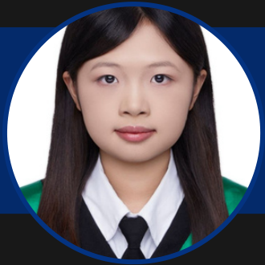
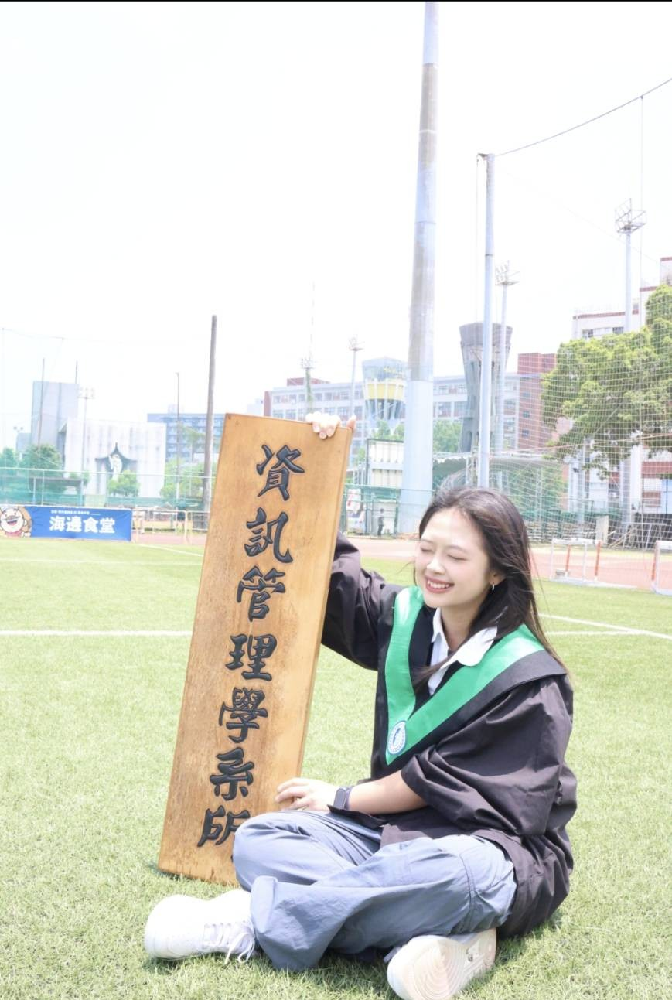
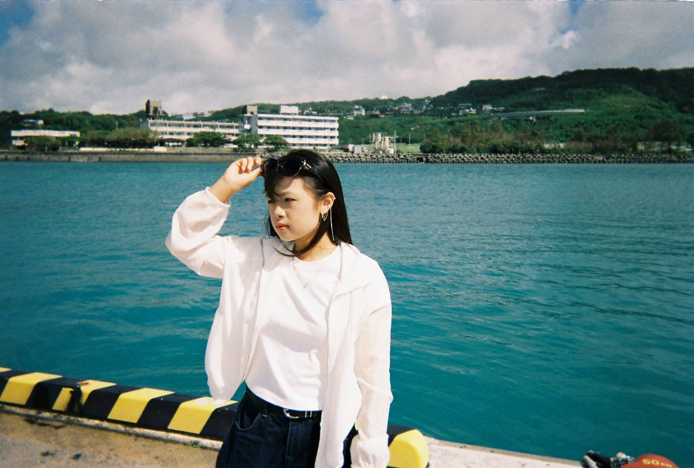
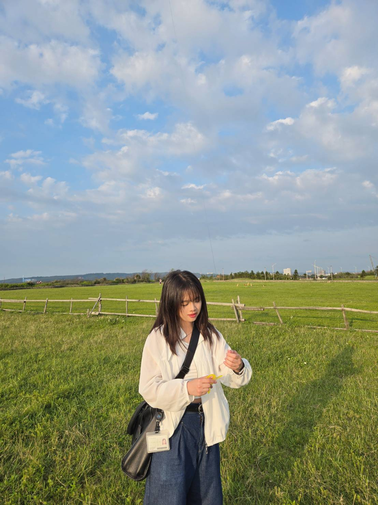
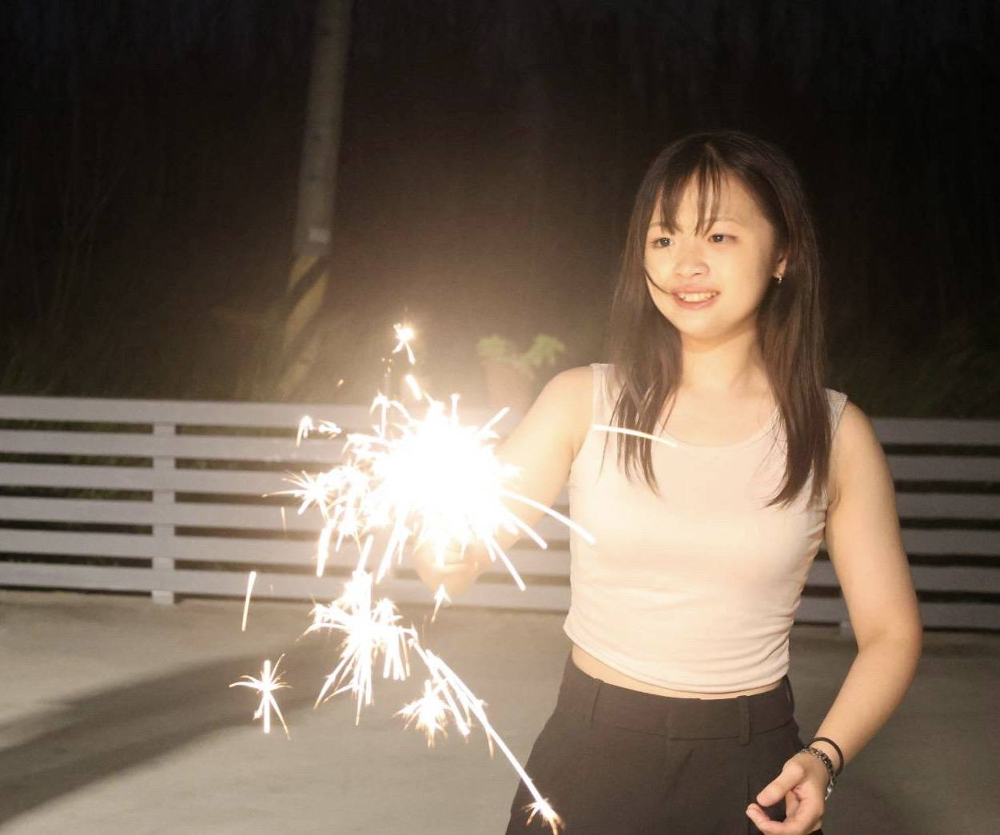
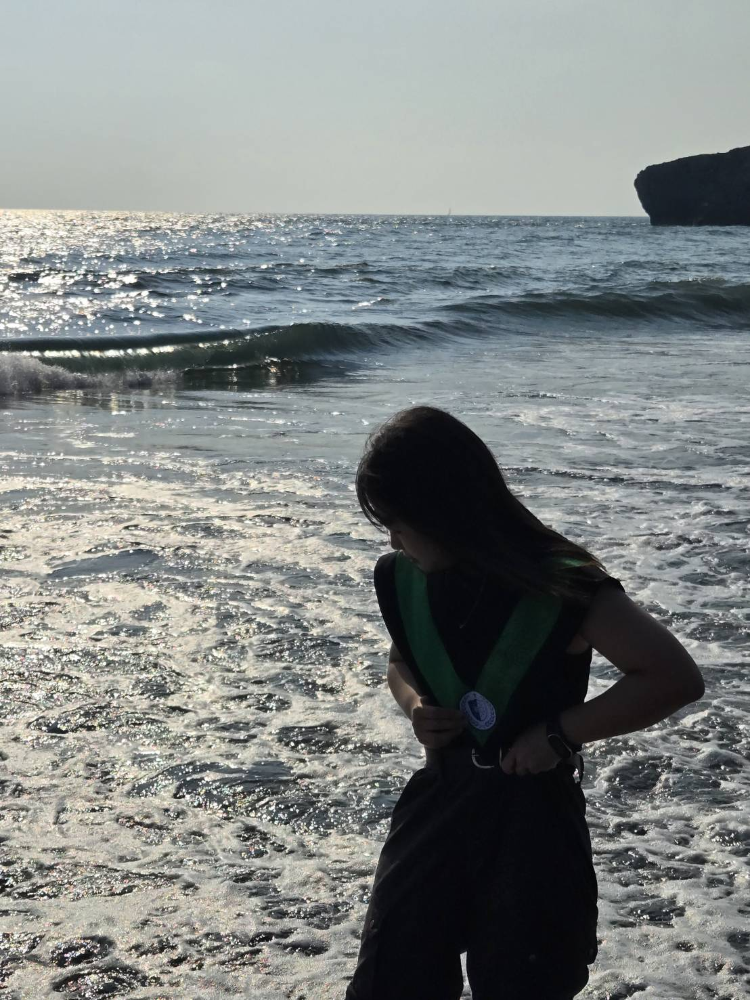
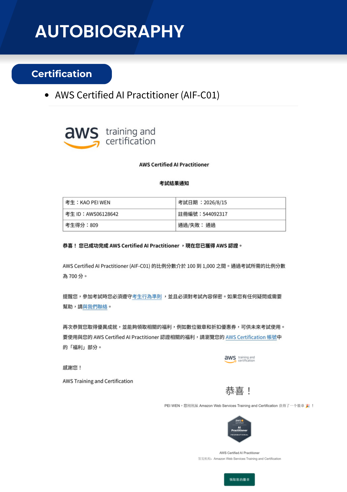

01 / RESEARCH
RAG
RAGenius
AI-powered stock trend navigation assistant，結合 Pinecone、BM25 + BERT hybrid retrieval 與 Hugging Face 情緒分析模型。
23 · MI STUDENT · TAIPEI
嗨，我是高沛彣，一個喜歡把生活觀察變成產品想法的資管碩士生。白天研究 AI 與 RAG，放學後喜歡看海、拍照、到處走走。

01 — A LITTLE ABOUT ME
一邊寫 code，一邊把 23 歲的日子過得有感。
目前在台科資管攻讀碩士，平常在研究室裡做 AI、RAG 和金融新聞分析，也喜歡把複雜的技術整理成好懂的故事。這個網站除了放作品，也記錄一些我喜歡的風景、畢業時刻和日常靈感。
02 — LIFE OUTSIDE THE LAB
研究室之外的我：
喜歡陽光、海、底片感和慢慢走。





02 — SELECTED WORK
A selection of research, products,
and experiments I am proud of.
AI-powered stock trend navigation assistant，結合 Pinecone、BM25 + BERT hybrid retrieval 與 Hugging Face 情緒分析模型。
以 AI 協助使用者理解智慧財產與財務資訊的產品概念，負責團隊規劃、後端與 UI/UX 協作。
重新設計校園循環杯租借流程，移除高成本機台，讓使用者在咖啡店就能完成租借與歸還。
03 — THE JOURNEY
持續把 AI 概念與雲端實務連結，探索更可靠的 AI product workflow。
投入 RAGenius 研究，並於第 23 屆 ITAOI Conference 進行研究發表與問答。
參與 React 前端、Java Spring Boot 後端與 QC 測試，熟悉 GitHub Issues、branch 與 PR review。
從資訊管理學習出發，擔任助教、帶領畢業專題，並以 96 分完成最後一學期。
04 — TOOLKIT
06 — CERTIFICATIONS
Credentials that reflect
my learning journey.

05 — LET'S CONNECT
如果你正在打造 AI 產品、研究新方法，或只是想聊聊一個好點子，歡迎聯絡我。
Start a conversation ↗